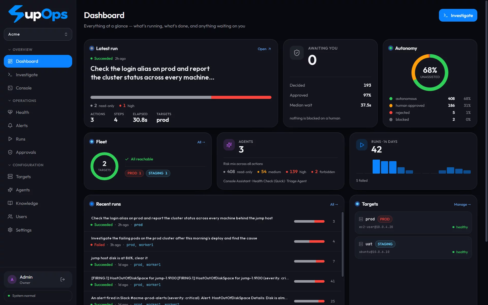

Just looking runs at once.
Status checks, logs, disk and memory. Read-only work never waits, so the investigation moves at machine speed.
kubectl get pods -n shop
From alert to root cause to fix, on the Prometheus, Grafana and Alertmanager you already run. SupOps investigates like an engineer, and nothing that changes your systems happens until a person says yes.
df -h /var
only looks · ran
du -sh /var/log/* | sort -h | tail -2
only looks · ran
Root cause: 31 rotated app logs in /var/log/app take 19 GB, and nothing ever removes them.
rm /var/log/app/app.log.*.gz
Fixed. Disk usage 95% → 41%, checked again with df -h /var.
Plugs into what you already run
Incidents, evidence, approvals, forecasts, runbooks and the service map, in a fast, calm interface built for 3 a.m.

Dashboard: what is running, what is healthy, and what is waiting on you.
Every command is read and rated before it runs. Three rules, enforced in code, not in a prompt.
Status checks, logs, disk and memory. Read-only work never waits, so the investigation moves at machine speed.
kubectl get pods -n shop
Restarts, deletes and edits pause with the exact command, what the agent intends, and why it was flagged.
systemctl restart nginx
Wiping disks or data is blocked outright, whoever approves it. A disguised spelling is treated as high risk, never waved through.
rm -rf / --no-preserve-root
Risk only ever goes up. Commands are parsed, not pattern-matched, and anything SupOps can't read with certainty is treated as high risk. Nothing the model reads or says can lower a rating, so a planted note buys an attacker more approvals, never fewer.
Related alerts become one incident. Read-only checks gather evidence from your metrics, logs and machines, and the diagnosis cites that evidence for every claim. New incidents are investigated on their own, read-only.
Over SSH or kubectl. Every change waits for approval, and a run paused at a gate resumes exactly, even after a restart.
Trust a routine fix once, exactly or by folder and file pattern. It stops waiting but keeps its risk rating. Production is opt-in, and you can untrust it any time.
Your runbooks, notes and facts guide every run. Import PDFs, Word or Markdown, and SupOps splits them into runbooks and facts.
Built from your documents and architecture diagrams, then confirmed against what is actually running.
Antivirus-style scans of your fleet: Quick for the essentials, Deep for a thorough investigation. On demand, or every 15 minutes to 24 hours.
Gemini, Ollama, LM Studio, vLLM, OpenRouter or any OpenAI-compatible model, with a fallback when the main one is down. Switch in Settings, no restart. Keys are encrypted at rest.
Nothing to install on your servers. It connects to the tools and machines you already have.
Every run becomes a shareable PDF or Markdown report, with diagrams and the screenshots that matter.
No access at all? It ranks the likely causes and gives you the checks, the fix and the rollback, every command rated.
Every series of your key signals is watched. SupOps learns each one's daily and weekly rhythm, so a busy morning is not "full by tonight", and a real leak is caught days ahead.
On a screen-share, SupOps is your copilot. Capture the client's screen in one click, from a floating window over your call, and get the next safe step.
The API, live command stream, web UI and database run in a single container. It creates its own secrets and admin login on first run.
$ git clone https://github.com/Ayyush-Maheshwari/SupOps.git
$ cd SupOps
$ docker compose up --build
# first build takes a few minutesOpen http://localhost:3001Sign in as admin@supops.local / supops, then change it.
Pick a modelSettings → paste a key (Gemini has a free tier) or point it at Ollama.
Add a server or clusterTargets → SSH or Kubernetes. Credentials are encrypted at rest.
InvestigateDescribe a problem and press Start. Risky steps wait in Approvals.
Self-hosted under Apache-2.0. Your credentials, telemetry and data stay inside your infrastructure. Built in the open, and contributions are welcome.